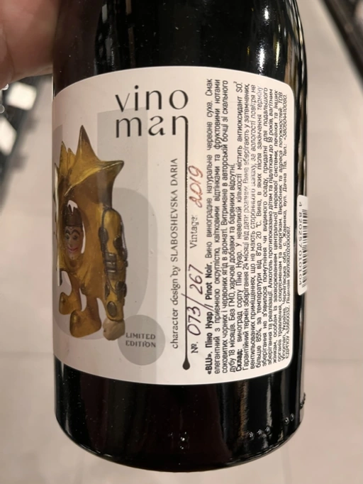

- Type
- Red Still, Dry
- Producer
- Vinoman
- Vintage
- 2019
- Location
- Ukraine, Chernihiv Oblast
- Grapes
- Pinot Noir
- Alcohol
- 13.8
- Sugar
- NA
- Price
- 1100 UAH
- Cellar
- N/A
Ratings
2022-05-31 - 7.50
Bottle 73 out of 267. Pinot Noir from the North of Ukraine. And actually interesting wine. It’s hard to guess both grape and origin. Prune, black (not dark) cherry, VA. Still to young, though hard to talk about potential. It’s kind of disintegrated: acidity, tannin and ethanol are separated, but on the other hand they are potent and decanting helps to combine everything into one story. Long aftertaste, interesting evolution. Overall confusing, but I enjoyed it. Would take a bottle to open in few years.